Vladimira Bratuž - Laka (1923 - 2006)
In honor of the 20th anniversary of the death of architect and sculptor Vladimira Bratuž - Laka (1923 - 2006), we exclusively present a previously unpublished photograph of the creation of her sculpture Riba. With kind permission of Mrs. Jasna Berce Račić and Mr. Tomislav Kalan.
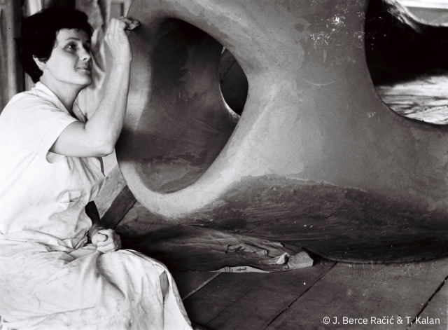
Towards the end of the 1950s, Vladimira Bratuž – Laka designed and created her largest and most recognizable sculpture – the Fish (Riba), which is located in Tivoli Park in Ljubljana and is intended for children's play. It is an authentic functional concrete sculpture that has been shaping an unforgettable memory of children's play in Ljubljana for over sixty years. Inside the perforated and hollowed-out fish sculpture, there is just enough space for a children's hideaway-sanctuary, and the feeling there is unique, as if one were in a womb, a small house, or a whale's belly. At the same time, children can also use it to run through or as a slide. It is simultaneously static and dynamic, sculpture and playground, an organic and functional multidimensional artwork. It is a bold monument of its time and yet timeless, architecture and sculpture - exactly that intersection which the philosophy of Gropius's Bauhaus in the first half and Ravnikar's B-stream at the Faculty of Architecture in the second half of the 20th century strived for, and as such represents a key connecting link and pivotal element in the history of Slovenian art and architecture. (N. Koselj)
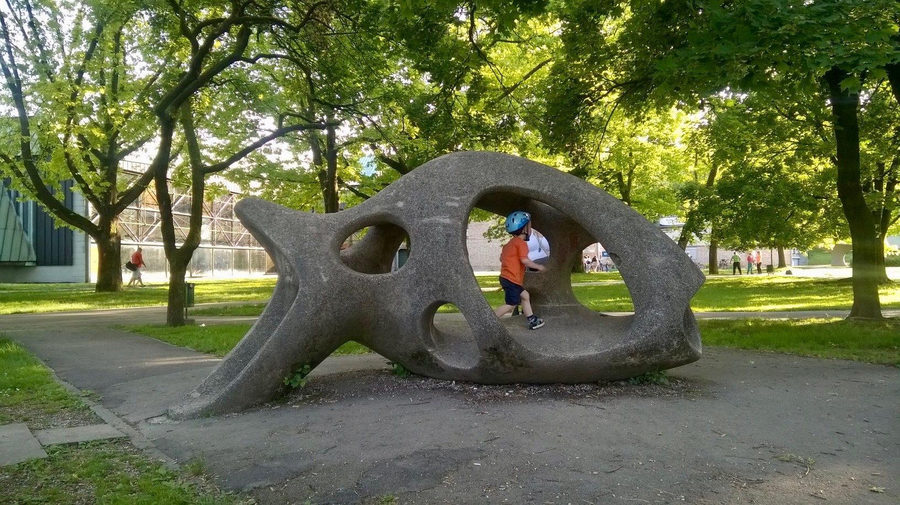
Photo: ©Nataša Koselj, 2016
Light in Mihelič's Architecture, photography exhibition of architecture students at Bažato Gallery in celebration of the 100th anniversary of the birth of architect Milan Mihelič
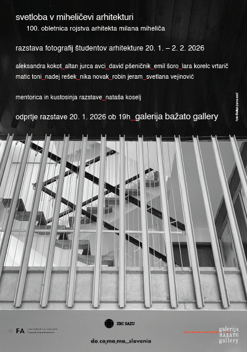
download:
PDF
19IDC Multiple Moderns, Los Angeles
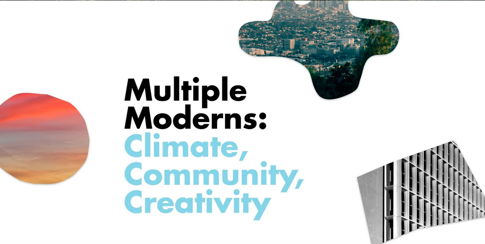
https://www.docomomo2026.com/
Docomomo Slovenia + SA20 + UL FA + ZVKDS Student Workshop: Renovation of Grabrijan's tombstone at Žale, April 2025

Authors of the tombstone: architect Nikolaj Bežek and sculptor Ivan
Štrekelj, 1952.
DJ72 Reverse Pedagogies - Conversations with authors of Docomomo Journal No. 72 in collaboration with UL FA students
UNDERSTANDING HERITAGE THROUGH THE CREATIVE PROCESS The use of copper in Slovenian art and architecture of the 20th century with an experimental student workshop

A group of UL FA students in the elective course Slovenian
Architecture of the 20th Century, under the mentorship of Assoc. Prof.
Dr. Nataša Koselj, is participating in the 18th international DOCOMOMO
conference, taking place in Santiago, Chile from December 10 to 14,
2024, where they are presenting a poster titled UNDERSTANDING HERITAGE
THROUGH THE CREATIVE PROCESS - The use of copper in Slovenian art and
architecture of the 20th century with an experimental student workshop
in the section
Modern Movement Educational Worldwide Initiative - MoMo-EWI
You are invited to view it!
Podcast / Copper in Plečnik's Architecture: conversation with Dr. Damjan Prelovšek
Pre-event: LAKA - Unveiling the hidden story of her creative power
Call for international scientific DOCOMOMO conference 2024
https://docomomoconference2024.com/
POST-PANDEMIC HERITAGE
On the fifth anniversary of the international platform LINA, in
collaboration with UNESCO, a publication titled POST-PANDEMIC HERITAGE
has just been released, which you can view at this link:
https://linaplataforma.wordpress.com/2023/05/20/patrimonio-pospandemia-libro/

STRUCTURALISM Vladimira Bratuž - Laka 100 years since birth and Edvard Ravnikar 30 years since death
download: PDF
DOCOMOMO Manifesto on Education Tokyo - Valencia


COMPLEX APPROPRIATIONS - OTHER OTHERNESS: Otti Berger and Vladimira Bratuž - video
Call for submissions for Docomomo Journal
You are cordially invited to submit contributions for a special issue of the international architectural journal Docomomo Journal, dedicated to the work of architects Dušan Grabrijan and Juraj Neidhardt.
Submission deadline: October 31, 2022.
More information about the call and the architects' work can be found
in the
appendix
and short video.
Appendix: Submission form

DOCOMOMO 2022
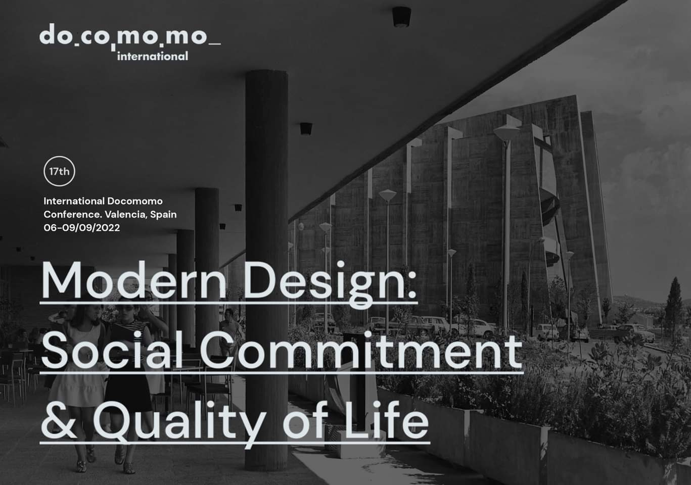
HOMMAGE À MLADINSKA KNJIGA PRINTING HOUSE IN LJUBLJANA
Architect: Savin Sever, 1963-66
Photograph of the eastern facade at the time of construction: Janez
Kališnik
Photographs of the current state (May 2022): Jure Marc
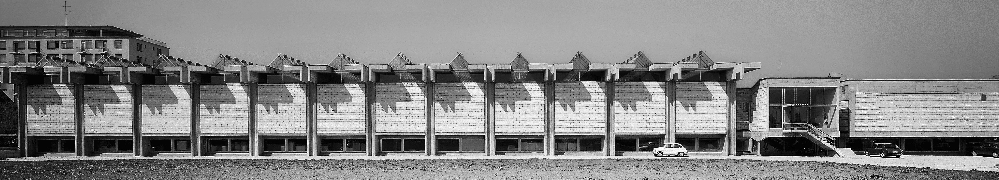
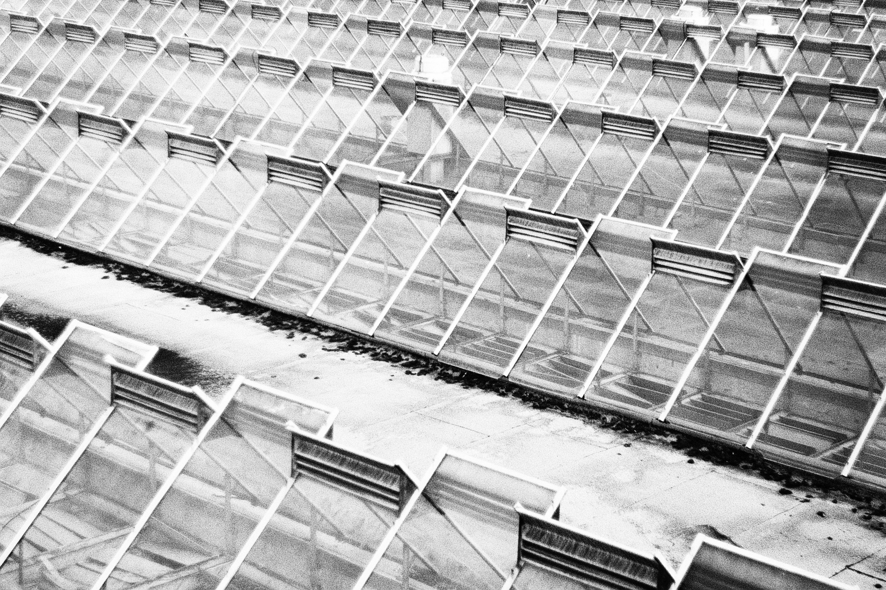

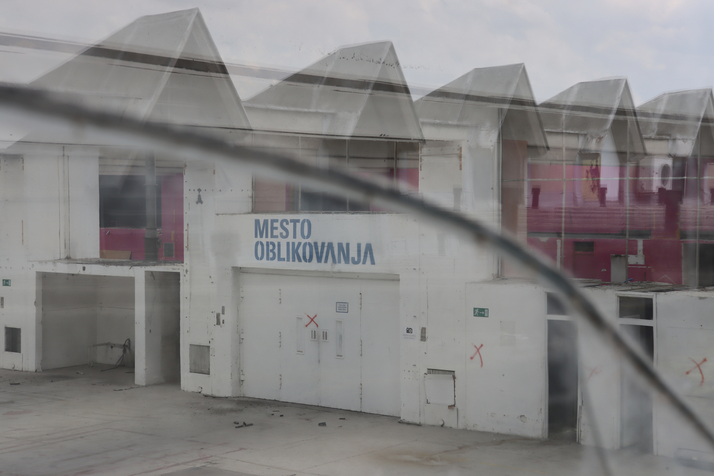
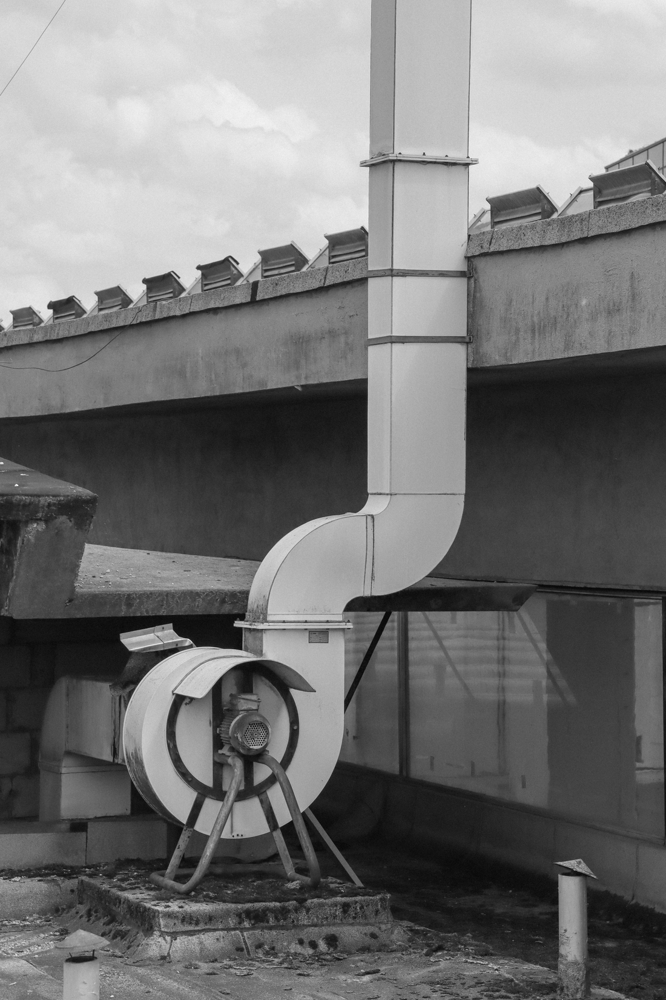


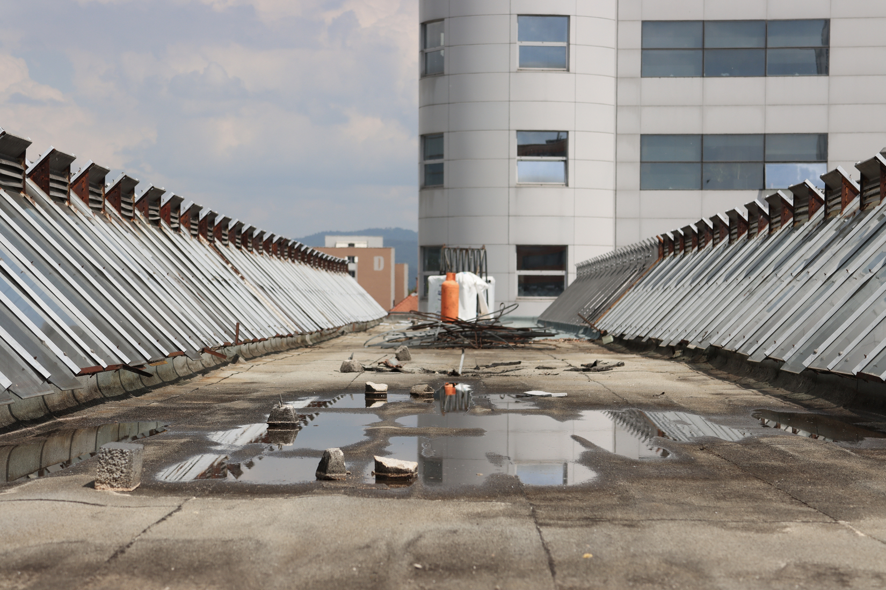


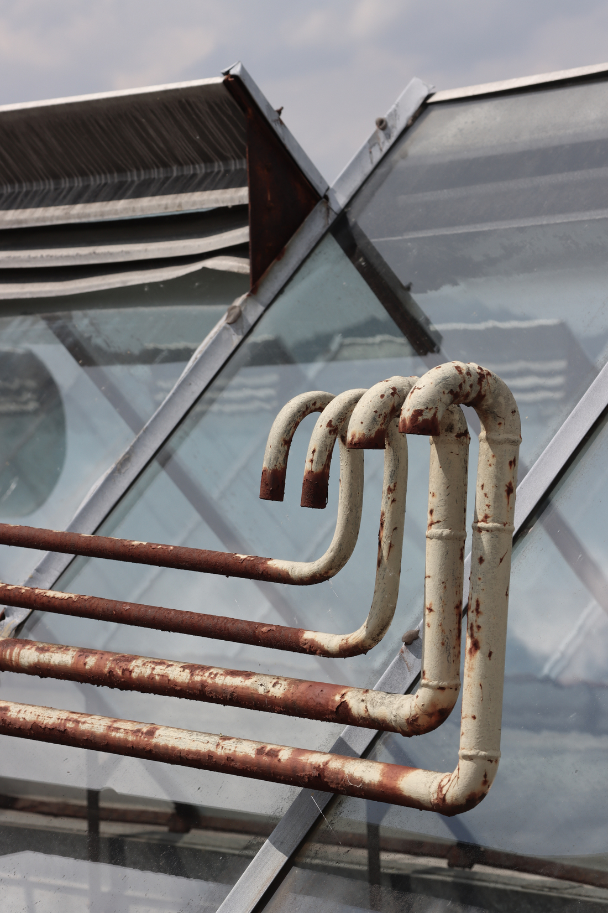


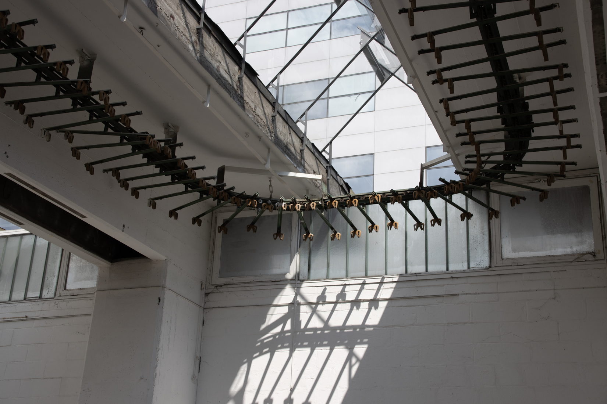


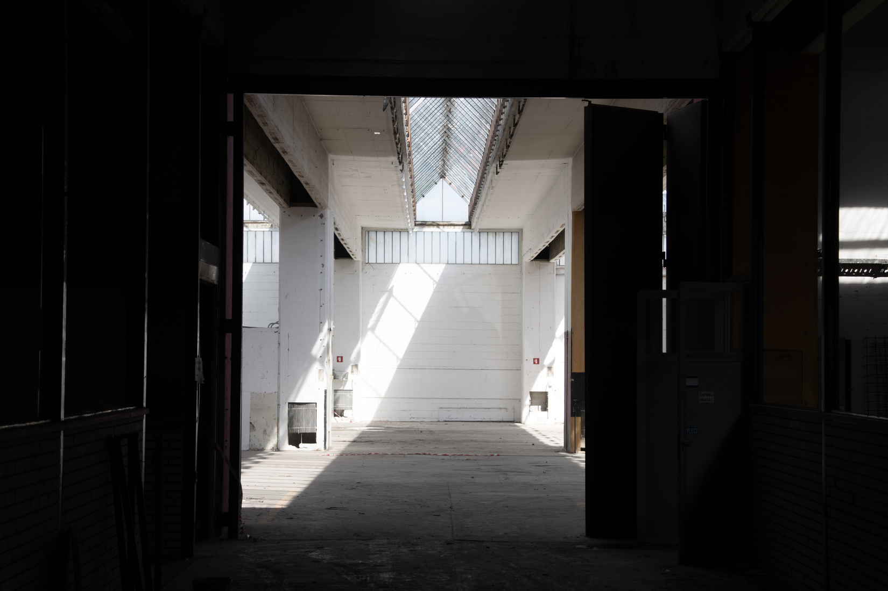

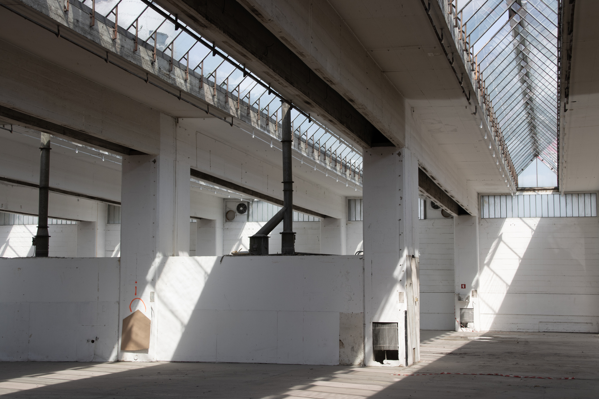
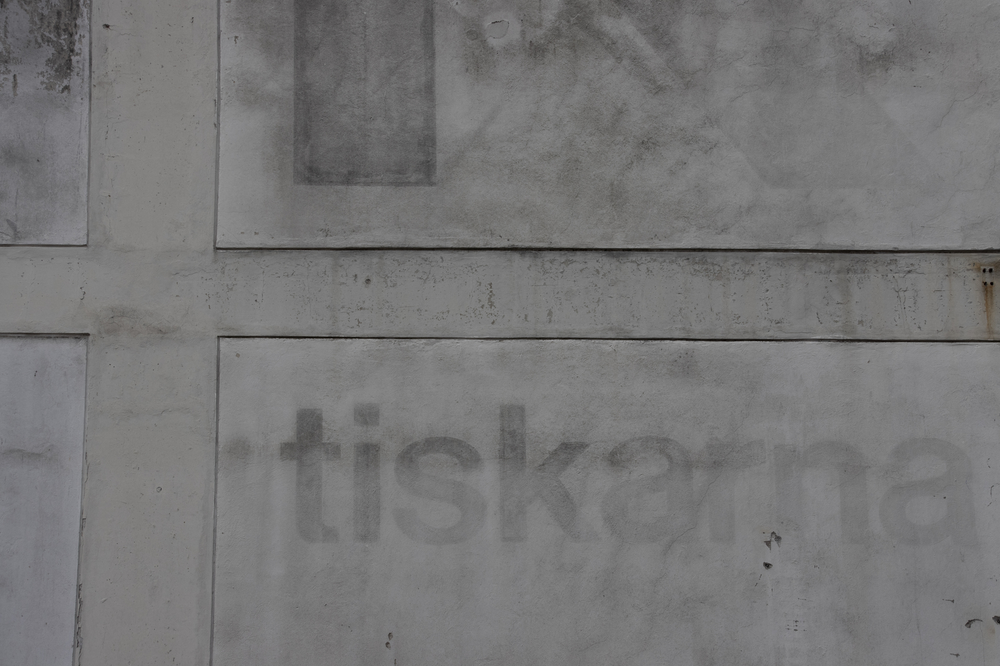
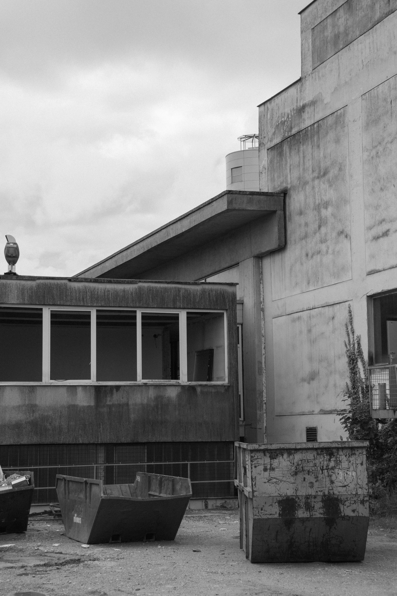
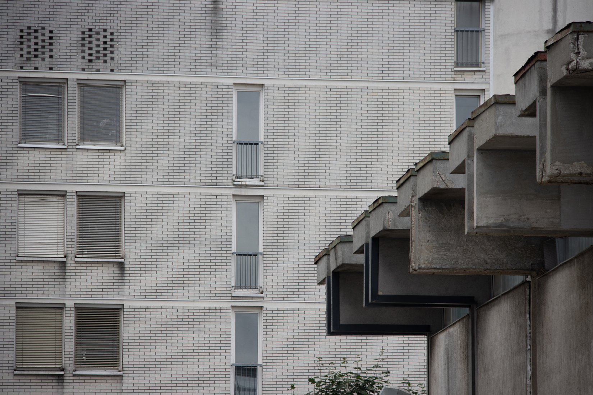


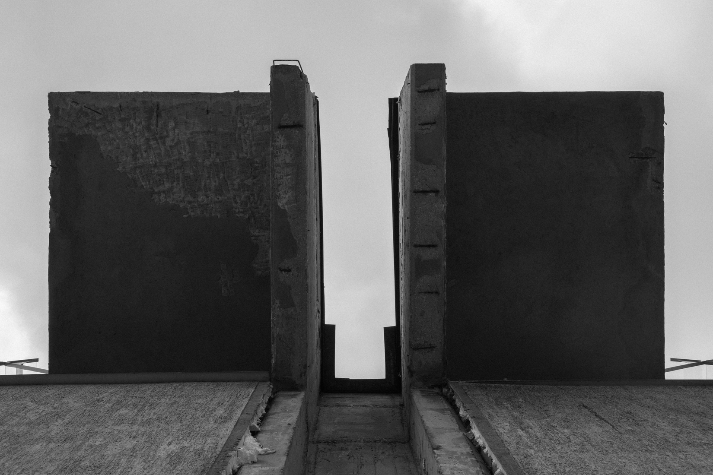
Podcast: Architect Aleksander Peršin: Trnovska pošta Complex
Podcast: Architect Tomo Jurčič: Vič - Rudnik Music School
anonymous modernism Trnovo - video
anonymous modernism Trnovo
The influence of the Ravnikar school in the 1970s and 1980s
download: PDF
ARCHITECT MILAN MIHELIČ = POET OF CONSTRUCTION
In memoriam
Architectural poetry arises when the real and the imaginary, reason and emotion, time and space intertwine in such a way and to such an extent that what is born resonates in a new dimension of beauty. That is how the experience of Milan Mihelič's architecture echoes within me every time I climb his wonderful Konstrukta staircase to my office, full of light and with an invaluable view. And every time I think, this man was truly a poet of construction. He conceived it together with structural engineer Jože Jaklič, in one way or another, always with a personal touch, very sensitive, yet fresh and inspiringly bold. Architect Milan Mihelič did not like public appearances, did not like to theorize, did not like to write. He showed his strength and knowledge through his work in practice. I met him in the late 1990s at his home behind Bežigrad, where he and architect Arnautović inventively built two experimental atrium houses from prefabricated elements that were used for their high-rises below the Castle. His residential towers on Kersnikova, where he resolves force distribution in a similar way as at Konstrukta, the Klavir and the cantilevered tower at Bavarski dvor, the Gospodarsko razstavišče (Trade Fair) and the department stores in Novi Sad and Osijek, speak for themselves of his mastery. They were repeatedly awarded and featured in numerous monographic publications. While at Bavarski dvor we witness the complete and deliberate urban degradation of his brilliant vision of the Northern City Gate, his lattice ceiling structure of the Slovenijales business building, where the House of the European Union now resides, inspires the ceiling of the new Ljubljana mosque and, as an enriched idea, creates a new tradition and connection with future generations. His umbrella-shaped structure of the gas station on Tivolska cesta has become a vibrant creative center and exhibition space for the youngest generation of artists.
Nataša Koselj
 Photo by: Miran Kambič
Photo by: Miran KambičDOCOMOMO 2020
 © ASPI
© ASPI
Academician and Professor Dr. Stane Bernik has passed away
A year ago we saw each other for the last time, when I gave him a gift, one of three digital copies of the conference proceedings of the 15th international Docomomo conference, which took place at the end of August 2018 in Cankarjev dom in Ljubljana. I dedicated this book to him in the opening, on his 80th birthday. Professor Stane Bernik was the first from Slovenia to make contact with this international organization for the documentation and conservation of modern movement architecture back in the 1980s. They came together with his wife and we had a very pleasant chat, although I had the feeling inside that we were seeing each other for the last time. On February 8, 2018, he attended a cultural event for the unveiling of a commemorative plaque for architect Milan Mihelič at the House of the European Union at the Gospodarsko razstavišče in Ljubljana, where mag. Gojko Zupan devoted his lecture to his work.
Studying his writings and analyses on Slovenian architecture of the 20th century, I practically grew up and formed my view of it from the early 1990s, when I dealt with the architecture of the 1960s in my thesis, up to today, when I lecture on this subject. He was also the co-supervisor of my doctoral dissertation. I can call him the father of post-war Slovenian architectural history of the 20th century, who crucially influenced my understanding of the levers and processes of its creation. His description of the tectonics of Ravnikar's extension of OLO in Kranj and the significance of this building for all Slovenian post-war architecture are fundamental to understanding the development of Slovenian architecture of the 20th century. When I returned from New York in 2004, where I attended the international Docmomo conference, we met, and he gladly entrusted me with the leadership of the Slovenian section of this international non-profit organization.
He was born on April 29, 1938, to an Albanian mother and a Slovenian father, and for me he always represented the concept of Balkan and Yugoslav culture in Slovenia. His editorial work at the magazine Sinteza and his catalog for the exhibition 'newer Slovenian architecture,' which he designed together with Jože Brum and Miha Jazbinšek, with the cover photograph of Mihelič's column of the department store in Osijek, in a 20 x 20 format, are still closest to my heart, both in content and concept and design. For a long time I did not understand why a man of such stature did not teach architectural history at the Faculty of Architecture or at the Department of Art History of the Faculty of Arts, University of Ljubljana. I asked him about this a decade ago, and he modestly replied that this is simply how it is here in Slovenia. The question is, how much architecture of post-war Slovenian modernism would have survived if it had been different?
Nataša Koselj
 Photo by: Jane Štravs
Photo by: Jane Štravs 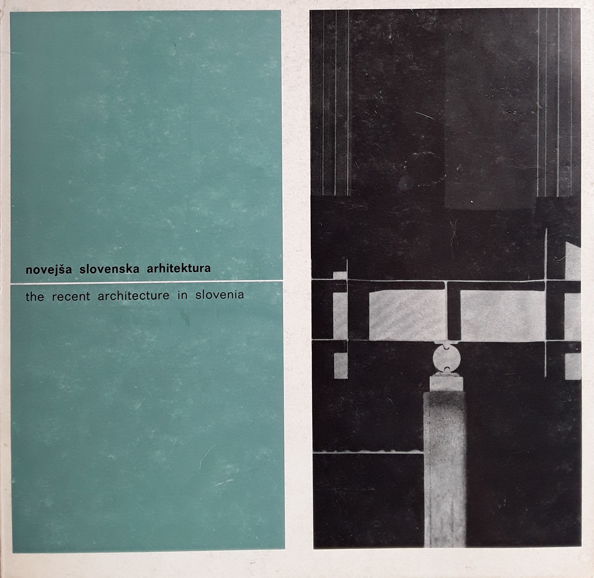
Docomomo 2020
http://www.docomomo2020.com/Metamorphosis. The Continuity of Change.
15IDC Conference proceedings
download: PDF
Discussion on Plečnik in Villa Prelovšek
Discussion with Alexander Tzonis and Liane Lefaivre by Nataša Koselj
Student Workshop 2018
DOCOMOMO Student Workshop, Ljubljana 24-28 August 2018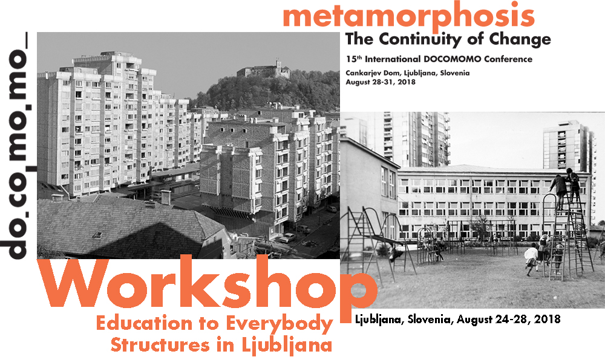
EU House as an important object of modern architectural heritage

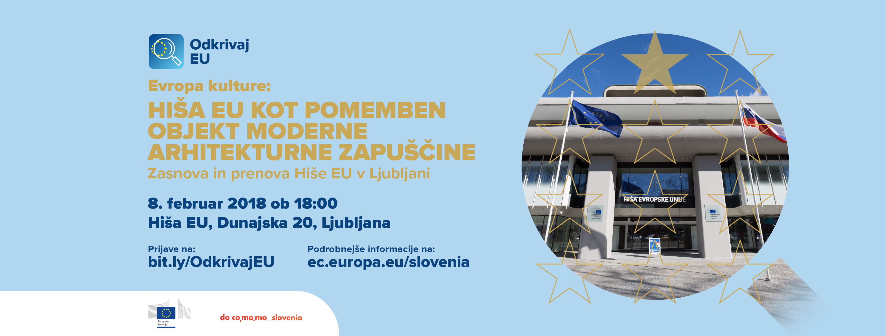
Edvard Ravnikar - 110 years since birth
Download PDF
Metamorphoses

Docomomo Slovenia is organizing a transdisciplinary international scientific conference titled Metamorphoses in August 2018 at Cankarjev dom. You are cordially invited to participate with your contribution! Applications are open until September 1, 2017. More at: docomomo2018.si
ARCHITECT MARKO ŠLAJMER (1927-1969)
In the spirit of the era of Slovenian post-war modernism

In 2017, when we celebrate the round anniversaries of Plečnik's death
and Ravnikar's birth, it is also 90 years since the birth of architect
Marko Šlajmer, Ravnikar's graduate and assistant, lecturer at the
Faculty of Architecture in Ljubljana and founder and first director of
the Ljubljana Urban Planning Institute (LUZ), who in the pioneering
period of Slovenian post-war modernism, in the 1950s and 1960s, played
an extremely important role in the field of architecture and urban
planning as well as the spatial policy of that time. In the spirit of
the new era, which placed at the forefront care for humanity,
collectivity, openness to progress, freedom, the functional, the
rational, the minimal, glorified the new possibilities of structural
means and techniques, opened spaces to light and nature, the few, but
precisely for this reason iconoclastic works of architect Marko
Šlajmer are like beacons of progress on the path of the new era that
was emerging at that time.
The exhibition opens the archive of Marko Šlajmer for the first time
and invites discussion.
The opening of the monographic exhibition will be on Monday, January
23, 2017, at 8:00 PM.
The exhibition will be open until March 2, 2017. You are cordially
invited!
Exhibition setup: Til Mlakar, Petja Ogrinc, Nik Solina
Texts: Urška Leban, Rok Primažič, Gaja Golob, Žan Plevnik, Zala
Koleša, Tjaša Kogovšek, Nejc Puš, Klemen Banovec Collection and
analysis of material: Rok Primažič, Tim Mavrič, Urška Leban, Žan
Plevnik, Gaja Golob, Eva Mavsar, Vesna Perovnik, Mako Primažič, Metka
Lozej, Petra Colarič, Tanja Kožuh, Klemen Banovec, Tjaša Kogovšek,
Zala Koleša, Dea Gombač, Nejc Puš, Marjan Gracar, all students of
architecture in the elective course Slovenian Architecture of the 20th
Century at the Faculty of Architecture, University of Ljubljana.
Invitation and brochure design: Nataša Koselj Mentor and curator of
the exhibition: doc. dr. Nataša Koselj, u.d.i.a.
Franc Novak “Architecture for the future human”
We invite you to the opening of the exhibition by authors Meta Kutin and Tomaž Ebenšpanger, which will take place on Thursday, September 18, 2014, at 8:00 PM at the DESSA gallery. At the same time, we invite you to a guided tour with a lecture, which will take place before the exhibition's closing, on Monday, October 13, 2014, at 7:00 PM at the DESSA gallery.
Also check out the brochure.
Protection of architectural heritage of post-war modernism
A presentation of the research on the importance and challenges of preserving the Ferantov vrt housing complex will take place on Thursday, May 15, 2014, at 5:30 PM in the Vurnik lecture hall of the Faculty of Architecture, Zoisova 12.
Edge and Metaphor | The Authentic Modernism of Edvard Ravnikar
From December 4, 2012 to January 4, 2012, in the windbreak of the extension of the Faculty of Architecture, University of Ljubljana, an exhibition of models and photographs of details of Edvard Ravnikar's architectural works is on display, titled EDGE AND METAPHOR – THE AUTHENTIC MODERNISM OF EDVARDA RAVNIKARJA. The exhibition is held on the 105th anniversary of Ravnikar's birth. An accompanying publication has also been published for the exhibition.
The project leader is doc. dr. Nataša Koselj, and the authors of the individual project assignments are students of the Faculty of Architecture: Dominik Košak, Tadej Juranovič, Rok Božič, Tina Vilfan, Boris Omahen, Eva Rajšter, Miha Munda and Laura Mercina.
The project was realized with the support of the Ivanšek Foundation, the Faculty of Architecture, University of Ljubljana and Docomomo Slovenia.
The architecture of Edvard Ravnikar is based on detail, therefore the exploration of his details is the foundation for understanding his architectural thought and its further development. The task of a group of students at the Faculty of Architecture in the course Slovenian Architecture of the 20th Century was to choose a characteristic Ravnikar detail and create a model based on it. The detail models are in various scales, made of medium-density fiberboard, and all express Ravnikar's inventive dynamic of thought in transcending given space and time.
You are cordially invited!
Download PDF
ARCHITECT DANILO FÜRST – 100 years since birth
Monographic exhibition – Festival Hall Bled, 6. 4. 2012 – 6. 5. 2012
On the centenary of the birth of architect Danilo Fürst, who died in 2005 and was active as an architect practically until his death, we wish to shed light on several perspectives in the history of Slovenian architecture of the 20th century. Plečnik's school and its characteristics, which shaped the most prominent representatives of Slovenian modernism, such as Edvard Ravnikar and Danilo Fürst; we would like to emphasize Fürst's Bled period, where as a city architect at the age of twenty-five, he built an enviable architectural oeuvre; post-war reconstruction, social housing and the beginnings of industrial prefabricated construction, a field in which Fürst played a leading role and is therefore considered a pioneer of prefabricated construction in Slovenia, and the period after his retirement, when he also built mountain huts and ski lifts and many works for the church.
Architect Danilo Fürst was born in 1912 in Maribor. In his Herculean creative opus, he touched all areas of architectural creation – from leading the architects' association, co-founding the magazine Arhitekt, through urban planning and horticultural arrangements, designing residential, school, administrative, and industrial buildings and striving for the establishment of prefabricated construction, to furniture design.
The monographic presentation of his extensive and diverse creative oeuvre in the Festival Hall in Bled highlights Fürst's work in the Gorenjska region and presents all the most important works of his oeuvre. The exhibition is accompanied by a guide to Fürst's architecture in Gorenjska in the form of a brochure, and towards the end of the exhibition, an extensive monograph in Slovenian and English will also be published, which comprehensively presents the entire architectural oeuvre of Danilo Fürst on over 300 pages with 300 photographs and plans.
The conceptual design, spatial concept and organization of the exhibition were in the hands of Maja Šmid, the author of the exhibition, guide and monograph is the architect doc. dr. Nataša Koselj. Architecture students also participated in the exhibition within the course Slovenian Architecture of the 20th Century: Alja Čehovin, Matic Kržan, Jure Mihevc and Natalija Razpotnik. Most of the photographs presented at the exhibition were taken by photographer Miran Kambič. The exhibition was made possible by: Municipality of Bled, Institute for Culture Bled, Forestry Enterprise Bled and Talum Kidričevo. Partners include: Faculty of Architecture, University of Ljubljana, Museum of Architecture and Design MAO and Docomomo Slovenia.
The exhibition will be opened on Friday, April 6 at 7:00 PM by the mayor of the Municipality of Bled, Mr. Janez Fajfar, and will be on display at the Festival Hall Bled, from 6. 4. 2012 to 6. 5. 2012, between 11:00 AM and 7:00 PM.
You are cordially invited!
Exhibition and symposium: Docomomo Slovenia_100